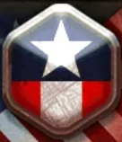
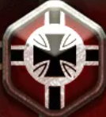
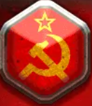

Call of War - описание
Call of War - игра о событиях второй мировой войны, которая затрагивает
как войны в Европе, так и на других континентах. Игрокам предоставляется
выбор в сценарие и государстве. Начиная от дальневосточной Японии и
заканчивая Соединенными Штатами Америки. Вы можете сыграть за
коммунистические государства, такие как СССР, Югославия, за
демократические США, Великобританию и так далее, за нацистский Рейх,
Италию, за азиатские страны, такие как Япония, Гоминьдан. Вы можете
управлять экономикой своей страны, армией, внешней политикой,
составляющим ваших городов и так далее.
Выберите доктрину, для дальнейшего просмотра списка стран из выбранной
доктрины:



На данном сайте будет рассматриваться сценарий на 30 игроков. Все
технологии и количество дивизий соответствут реальным данным на момент
начала Второй Мировой Войны 1939 года.